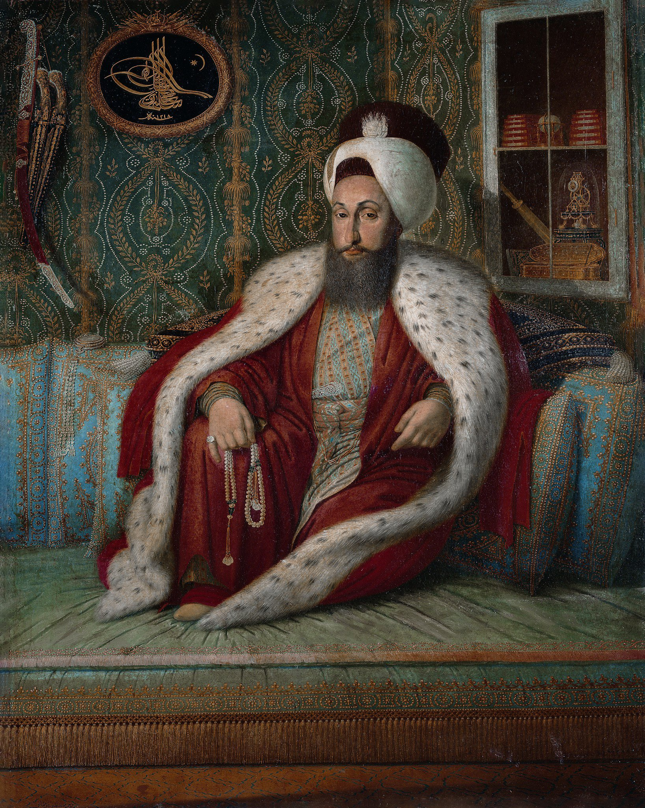

| önceki |  |
sonraki |
III. Selim, Osmanlı İmparatorluğu'nun yirmi sekizinci padişahıdır. Babası III. Mustafa, annesi Mihrişah Sultan'dır. Osmanlı tarihinin en büyük reformcu, sanatkar ve aydın padişahlarından biridir. Klasik Türk musikisinde "Sûzidilârâ" makamını icat eden dahi bir bestekâr, neyzen ve "İlhâmî" mahlasıyla şiirler yazan bir şairdir. Devleti çağdaş bir çizgiye çekmek için başlattığı köklü yenilikler bütünü tarihe "Nizâm-ı Cedîd" olarak geçmiştir.
Nizâm-ı Cedîd Islahatları ve Akka Zaferi
- Nizâm-ı Cedîd Ordusu: Yeniçeri Ocağı'nın yozlaşmış yapısına karşılık Batı usulünde modern talim gören, modern tüfeklerle donatılmış ve özel üniformalı yeni bir ordu kurmuştur. Bu ordunun masraflarını karşılamak için İrâd-ı Cedîd hazinesini kurmuştur. Levent ve Selimiye Kışlaları inşa edilmiştir.
- Mühendishâne-i Berrî-i Hümâyun (1795): Kara ordusuna subay ve harita-topçu mühendisleri yetiştirmek üzere modern Kara Harp Okulu'nun temeli atılmıştır.
- Sürekli (Daimi) Elçiliklerin Açılması: Avrupa diplomasisini yakından takip etmek için Londra, Paris, Viyana ve Berlin'de ilk daimi elçilikler açılmış; ilk daimi elçi olarak Yusuf Agah Efendi Londra'ya gönderilmiştir.
- Akka Zaferi ve Napolyon'un Bozgunu (1799): Fransız İmparatoru Napolyon Bonapart Mısır'ı işgal edip Suriye'ye yürüdüğünde, 91 yaşındaki Cezzar Ahmed Paşa komutasındaki Nizâm-ı Cedîd ordusu Akka Kalesi önünde Napolyon'u tarihindeki ilk askeri yenilgisine uğratmıştır. Napolyon hezimet sonrası: "Kader beni bir ihtiyarın elinde oyuncak etti!" demiştir.
- Kabakçı Mustafa İsyanı ve Şehadeti (1807 – 1808): Nizâm-ı Cedîd ıslahatlarından rahatsız olan gerici çevreler ve yeniçeriler Kabakçı Mustafa liderliğinde ayaklanmıştır. Kan dökülmesini istemeyen III. Selim tahttan çekilmiş; yerine IV. Mustafa geçirilmiştir. Kendisini tekrar tahta çıkarmak için Rusçuk Ayanı Alemdar Mustafa Paşa İstanbul'a geldiğinde, sarayda IV. Mustafa'nın cellatları tarafından ney ve kılıç darbeleriyle şehit edilmiştir.
Ailesi
- Eşleri:
- Nefizar Kadın
- Zibifer Kadın
- Afitab Kadın
- Re'fet Kadın
- Nuruşems Kadın
- Hüsnümah Kadın
- Çocukları:
III. Selim'in çocuğu olmamıştır.
III. Selim hakkında daha fazla bilgi için buraya tıklayın.